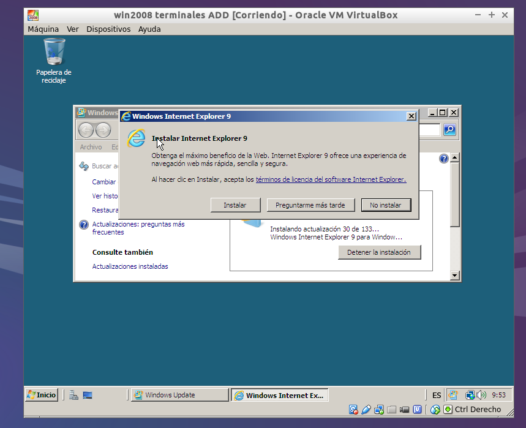

- Módulo: Administración de sistemas operativos.
- Título del trabajo Acceso Remoto con VNC Y RDP
- Componentes del grupo: Jose Pablo González Galán
- Curso Académico: 2014/2015
- Fecha de entrega: 03/10/2014
Para empezar descargamos la herramienta VNC viewer.
Una vez instalado abrimos VNC, vamos a opciones y configuramos el puerto.
Ejecutamos VNC y ponemos la IP del servidor al que nos vamos a conectar.
Autentificamos.
Hacemos la misma tarea a la inversa.
Asignamos direcciones IP estáticas a ambas máquinas (cliente y servidor).
Nos vamos a propiedades del sistema y permitimos las conexiones remotas desde otros equipos.
Es necesario tener el SO actualizado para poder realizar la instalación de los componentes de forma correcta. Por tanto actualizamos el servidor.

Ya actualizado, creamos un usuario.

Comenzamos a instalar las funciones del servidor.

Agregamos el usuario creado.

Cuando instalamos las funciones del servidor, agregamos una aplicación remota mediante RemoteApp.
Nos dirigimos a la ruta donde se encuentra la aplicación remota, la ejecutamos...
Autentificamos con el usuario creado y comprobamos que funciona.